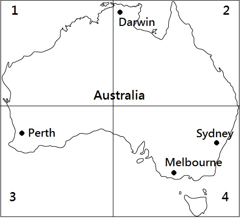

Questions 1 through 3 refer to the following short talk:
00:00 00:00 01:10 |
|
| The U of C Hospital's department of hospitality is currently seeking part time and full time employees. Positions include cooks, waiters, dishwashers, and cleaners in the cafeteria, as well as food deliverers for patients in the hospital's various wards. Experience in hospitality is an asset, but not required. Preference will be given to individuals with greater availability, especially those who are able to do the night shift. Full time positions operate according to a ten days on, 4 days off schedule, while part time positions may vary. Application forms are available from the hospital's main information counter on the first floor, the Student's Union Office in the Campus Central building, or online at www.UofCHospital.com/hospitality. Applications must be submitted in person, along with a resume, to the Office of Human Resources, room #212, at the U of C Hospital. C城大學內設醫院的餐飲部目前正在徵求兼職與全職員工。職缺包括廚工、服務員、洗碗工、自助餐廳清潔工，以及醫院眾多病房的送餐員。有餐飲部工作經驗者佳，但非必要。配合度高者優先錄取，尤其能輪夜班者。全職職缺依做十天休四天之班表出勤，兼職者則可能有不同。應徵表索取地點為醫院一樓中央服務台、校園中央大樓的學生會辦公室，或上網址www.UofCHospital.com/hospitality下載。應徵表連同履歷表必須親自送交至C大醫院212室人力資源辦公室。 重要單字片語: 1. hospitality n. 好客 2. seek v. 尋找；企圖 3. cafeteria n. 自助餐 4. various adj. 各種各樣的 Ex. He has studied the cultures of various Western countries. 他研究了各西方國家的文化。 5. ward n.病房；區；保護；監禁/ v. 避開 6. asset n. 資產；才能 Ex. His chief asset is his winning smile. 他的主要資本是那迷人的微笑。 7. preference n. 偏愛(事物或人) ；優先(權); 8. individual adj. 個別的；特有的/ n. 個體 9. shift n. 輪班；變動/ v. 轉移；變動 10. operate v. 運作；營運；動手術 11. submit v. 使服從；提交；忍受 12. advertise v. 做廣告；宣傳 Ex. They put up posters all around the town advertising the circus. 他們在鎮上四處張貼海報為馬戲團作宣傳。
|
Questions 4 through 6 refer to the following short talk: 00:00 00:00 00:57 |
| Welcome to all domestic and international visitors at the Pocahontas Cable Car Station. Due to heavy crowds today, we are asking that you pay close attention to the following directions. As you approach the ticket booths on the lower floor, you will notice that there are three separate lineups. Parties with children under the age of 5, senior citizens, and handicapped or injured passengers should use the lineup on the far left. The lineup at the center is for officially registered tour groups with more than 8 members, tour guides included. All other passengers should wait in the lineup at the right. As a reminder, guests staying at the Pocahontas Cabin Resort are entitled to a 15% discount on all cable car tickets. Proof of your stay, such as a room key or hotel receipt, must be presented. Enjoy your ride today! 歡迎來到波卡洪塔斯纜車站的所有國內外遊客。由於今日人潮眾多，我們要請您特別注意以下的指示。當您前往下層的售票亭時，您將會注意到那裏分別設有三條等待線。攜有五歲以下孩童、老人、身心障礙或行動不便遊客應利用最左側等待線。位於中間的等待線提供給經正式登記八人以上含導遊之旅行團。其他所有遊客應在右側等待線等候。提醒您，住宿波卡洪塔斯木屋渡假村之來賓享可享纜車票一律85折。您必須出示例如房間鑰匙或旅館收據作為您的住宿證明。請盡情享受今日的旅程！ 重要單字片語: 1. cable car 纜車 2. crowd n. 人群； 一堆/ v. 擠滿(+with) 3. approach v. 接近；著手處理/ n. 接近；方法 4. booth n. 攤(子)；小房間；電話亭 5. separate adj. 分隔；區分；分居 Ex. Men and women have to change in separate rooms. 男女在不同的房間換衣服。 6. citizen n. 市民 7. handicapped adj. 障礙/ v. 妨礙 Ex. They are raising funds for handicapped children. 他們為殘疾兒童募集資金。 8. officially ad. 官方地；正式地 9. entitle v. 給...權力 Ex. Prisoners are entitled to apply for parole. 囚犯有權申請假釋。 10. present adj. 出席的；現在的/ n. 現在； 禮物/ v. 贈送 11. address n. 地址；演說/ v. 致詞；稱呼 |
Questions 7 through 9 refer to the following short talk: 00:00 00:00 00:49 |
| Before we enter the laboratory, there are a few safety precautions that must be taken. All visitors must wear rubber gloves. This is to prevent any foreign dirt or bacteria from being introduced into the lab, but also to protect visitors from hurting themselves by touching any dangerous liquids that may have been spilled on the surfaces of the laboratory. Safety goggles must also be worn, to protect the eyes from any splashing that may occur, as well as gases that could be harmful to the eyes. There are larger masks provided for those wearing glasses. Finally, we ask that all visitors turn off their mobile phones and lower the volume of their voices as they walk through the lab, so as not to bother or distract the scientists at work. 在我們進到實驗室以前，有幾個安全預防措施必須作。所有訪客必須戴上橡膠手套。這是為了預防任何外來的污物或細菌被帶進實驗室，但也是為了避免訪客接觸到可能已經溢出到實驗室地上的任何危險液體而傷害自己。安全護目鏡也必須戴上以防護眼睛不會受到有可能發生的任何液體潑濺的傷害，氣體也同樣的可對眼睛造成傷害。有大型面罩提供給戴護目鏡的訪客使用。最後，我們要求所有訪客在參觀實驗室時關閉您的手機並且降低說話音量，這樣才不會讓工作中的科學家受到打擾或分心。 重要單字片語: 1. laboratory n. 實驗 2. precaution n. 預防；謹慎 Ex. We have taken necessary precautions against fire. 我們已採取必要的防火措施。 3. rubber n. 橡膠/adj. 橡膠的/ v. 用橡膠製造 4. prevent v. 妨礙；阻止 5. bacteria n. 細菌(複數) *bacterium n.細菌(複數) 6. liquid n. 液體/ adj. 液體的；清澈的；不固定的 7. spill v. 溢出；洩密/ n. 溢出；跌下 Ex. I spilled my coffee all over the floor. 我的咖啡灑的滿地都是。 8. goggle(s) n. (複)護目鏡/v. 轉動眼睛 9. harmful adj. 有害的 10. distract v. 轉移；使分心；困擾 Ex. The noise distracted him from his reading. 喧鬧聲使他不能安心讀書。 11. chemical adj. 化學的/n. 化學製品 12. experiment n. 實驗；試驗 |
Questions 10 through 12 refer to the following short talk: 00:00 00:00 00:54 |
| On behalf of Marvin Toys Incorporated, I would like to issue the following public apology. When the Desert Beast boy's action figure was released in the summer of 2011, there were complaints from various communities of Middle-Eastern origin. They argued that the voice of the talking monster doll was purposely rendered with an Arabic accent, and found this offensive. Marvin Toys had no intention to cause offense with the doll, nor did we mean to imply any sort of connection between the monster and people from that part of the world. As of yesterday, the toy has been taken off the shelves nationwide, and will be replaced by a similar action figure with a neutral English accent. We sincerely apologize for any harm caused, and hope that affected communities will forgive and forget. 本人謹代表馬文玩具公司發布以下之公開道歉聲明。當沙漠野獸這款男孩人形玩偶於2011年夏天上市時，有來自於許多中東裔社群的抗議。他們認為這個會說話的怪物玩偶的聲音是刻意做成帶有阿拉伯口音，因而感覺受辱。馬文玩具公司沒有以該玩偶造成反感的意圖，亦無暗示怪物與世界上這個地區的人之間有任何的關聯性。因此昨天該玩具已全國性的下架，並且將會被更換為帶有中性英語口音的人偶。我們誠摯的為所造成的任何傷害而致歉，並期盼受影響的社群能原諒與淡忘。 重要單字片語: 1. on behalf of 代表 2. apology n. 道歉 3. release v. 釋放；放鬆 ；發行 Ex. The prisoner was questioned before his release. 囚犯被釋放之前受到了審問。 4. render v. 描繪；使得；給予；放棄 5. accent n.口音；語調 ；重音/v. 強調；重讀 6. offensive adj. 冒犯的；進攻性的/ n. 進攻 7. imply v. 暗指；必需 Ex. Her silence implied consent. 她的沈默意味著同意。 8. nationwide adj. 全國性的 9. affect v. 影響；感動 10. exhaust v. 用完; 使精疲力盡；排出/ n. 排出 11. mock v. 嘲弄；模仿/ adj. 假的 12. accuse v. 指控；譴責 Ex. He was accused of murder. 有人指控他謀殺。 |
Questions 13 through 15 refer to the following short talk: 00:00 00:00 00:54 |
| Allow me to show you some of the advanced features of this tablet. First, note that there are mini cameras on both the front and backsides, helping users to take photos of themselves as well as scenes in front of them. The camera on the screen side is also ideal for video conversations. Second, feel how light it is. This is one of the thinnest tablets on the market, weighing less than 800 grams. Last but not least, the case that is included can be bent upright to form a stand - perfect for using the tablet on a counter or other flat surfaces. Please feel free to take a few minutes to navigate the desktop. All the apps you see are pre-loaded on the tablet. If you have any questions whatsoever, my name is Mike. Give me a holler if you need me. 請容我為您介紹這部平板電腦的一些先進的功能。首先，注意在前方與後方配備有迷你相機，可幫助使用者為他們自己自拍以及拍攝眼前的景象。位於螢幕側的相機也十分適合用來作視訊通話。其次，感覺一下它有多輕。這是市面上最薄的平板之一，重量少於800克。最後也很重要的是，附在裏頭的皮套可以往上被折成一個立架 - 非常適合用來在長桌或其他平面上使用平板電腦。請任意花上幾分鐘時間操作一下桌面。所有您所見到的應用軟體全都預載於平板中。如果您有任何問題，我的名字是麥可。有任何問題就喊我過來。 重要單字片語: 1. allow v. 允許；提供 Ex. They allow their children to run wild. 他們任憑孩子到處亂跑。 2. advance v./n. 推進；提升；預付 3. tablet n. 小塊 ； 藥片； 平板電腦 4. upright adj. 正直的；直立的/ adv.垂直地/ n. 垂直/ v. 使豎立 5. counter n. 櫃檯 6. surface n. 表面；外觀/ adj. 表面的/v. 出現；浮出水面 Ex. The pebble made a ripple on the surface of the lake. 小石子在湖面上激起一個漣漪。 7. navigate v. 駕駛； 航行 Ex. He navigated the ship to a safe port. 他將船駛進一個安全的港口。 8. warehouse n. 倉庫 9. built-in adj. 嵌入的； 固定的 10. salesman n. 推銷員 11. perfect adj. 完美的/v. 使…完美 |
Questions 16 through 18 refer to the following short talk:
00:00 00:00 00:55 |
|
| Hello. This is a message for Mr. And Mrs. Anderson. This is Ned Riopel, your landlord. We have received complaints about bedbugs from other tenants in the building this month. Whether you have them in your apartment or not, we will be doing a spray of the entire building this Sunday from 1-3 in the afternoon. No one is allowed to be in the building at that time, and I would suggest that you take your dog, Shi-lo out with you at that time as well. It should be safe to return to your apartment two hours after the spraying is finished. The sprayers will be using pesticides that could be dangerous to plants, so they advise that you cover all plants and fish tanks, and don't leave any food out in the open on that day. If you have any questions about the spraying, don't hesitate to call me on my cell at 980-8873. 你好！這是給安德森夫婦的留言。我是奈得o瑞歐佩，你們的房東。這個月我們從大樓其他房客那接到關於有臭蟲的抱怨。無論你們的公寓內有無該問題，這個星期日的下午從一點到三點我們將要對整棟大樓進行噴藥。屆時不得有任何人留在大樓內，並且我會建議你們把你們的狗西蘿也一起帶離開。噴藥結束的兩個小時後回到你們的公寓應該是安全的。噴灑的人會使用可能對植物有害的殺蟲劑，所以他們建議你可以將所有的盆栽和魚缸覆蓋住，而且當天不要將任何食物露天放置。若你有任何關於噴藥的疑問，請儘管撥我的手機980-8873找我。
重要單字片語: 1. landlord n. 房東；地主 2. bedbug n. 臭蟲 3. tenant n. 房客/ v. 租賃 Ex. This house is tenanted by an immigrant from Asia. 這所房屋為一個來自亞洲的移民所租住。 4. spray n. 噴霧(液)/v. 噴灑 Ex. He sprayed water on the flowers in the morning. 他早晨給花澆水。 5. entire adj. 全部的；連續的/ n. 全部；整體 6. suggest v. 建議；暗示 7. pesticide n. 殺蟲劑 8. advise v. 勸告；建議；通知 Ex. Her father advised her to keep her distance from that fellow. 她父親勸她和那傢伙保持距離。 9. tank n. 櫃；箱；坦克/ v. 把...貯放在櫃(或罐)內 10. hesitate v. 猶豫 11. voice mail 語音信息 |
Questions 19 through 21 refer to the following short talk: 00:00 00:00 00:46 |
| I'd like to direct everybody's attention to page 4 of the handout. In the second paragraph, you'll notice some highlighted areas. These are the most recent modifications to the wording on the welcome page of our website. The changes will go live this afternoon at 4pm sharp. I want everybody to take a few minutes to review them carefully, and make sure that there are not any typos or false information. It has already been pointed out that the wording in the third highlighted sentence is a little awkward. We will be rewording the phrase "Empire Tech is the best technical institute in the land" to "Empire Tech is New Zealand's premier institute of information technology." Any other suggestions are welcome. 我想請大家注意講義的第四頁。在第二段你會發現一些被標示出來的地方。這些是對我們網站上歡迎網頁措詞的最新修改。變動後的部份會在今天下午四點準時上線。我要每一個人花幾分鐘時間仔細的檢討，確保沒有任何的錯字或錯誤資訊。被標示出句子的第三個的用語被指為有一些不通順。我們將會把"帝國科技是國內最佳技術學院"的措辭改為"帝國科技是紐西蘭的第一大資訊科技學院"。歡迎提出任何其他的建議。 重要單字片語: 1. handout n. 傳單；講義 2. paragraph n. 段；節 3. highlight v. 強調；照亮/ n. 最明亮(突出)的部分 4. modification n. 修改；減輕 Ex. The plan requires some modifications. 這個計劃需作些修改。 5. typo n. 打字排印錯誤 6. awkward adj. 尷尬的；笨拙的；棘手的 7. empire n. 帝國；大企業；君權 Ex. When did the empire begin to wane? 那個帝國何時開始衰落的? 8. institute n. 協會；學校 ；原則 9. premier n. 首相/adj. 首要的；最早的 Ex. He was appointed as the new premier. 他被任命為新總理。 10. rhyme n./v. 押韻 11. slogan n. 口號；標語 |
Questions 22 through 24 refer to the following short talk: 00:00 00:00 00:53 |
| I want to take this opportunity to thank you all for unanimously electing me as the union representative for the Callingwood branch of ETS Transportation. I whole-heartedly accept the position and promise to do my best to represent the rights of every single one of the employees at Callingwood ETS, from the drivers and mechanics to the bus cleaners and janitors. I plan to continue from where your last representative, Carol Stein, left off for her maternity leave. Before she left, Carol allowed me to shadow her for several months, and I have learned the ins and outs of the position and developed important acquaintances within the union council. I promise to listen to all of your needs, and make them heard, where they need to be heard! 我想藉這個機會感謝大家一致票選我擔任ETS運輸公司卡林伍德分公司的工會代表。我衷心的接受這個職務並承諾盡我最大努力來代表ETS卡林伍德從司機和技工到巴士清潔員與清潔工的每一位員工的權力。我計畫從你們的上一位代表卡蘿斯坦請產假時尚未完成的工作接手繼續。在她離職前，卡蘿讓我跟著她數個月，我已熟悉了這個職務的來龍去脈而且在工會理事會中結識了重要的熟人。我承諾會傾聽你們的需要並讓它在對的地方被對的人知道! 重要單字片語: 1. opportunity n. 機會 2. unanimously adv. 無異議地；全體一致地 3. elect v. 選舉；選擇/ n. 選定的/ n. 被選定的人 Ex. It turned out that she was elected by a unanimous vote. 結果她以全票當選。 4. union n. 結合；工會 ；聯邦 5. transportation n. 運輸(工具) 6. promise n. 承諾；希望/ v. 承諾；答應 Ex. You must live up to your promise. 你必須實踐自己的諾言。 7. mechanic n. 修理工 8. maternity leave 產假 *maternity n. 母性；產婦的 9. develop v. 發展；養成 10. acquaintance n. 熟人；相識 Ex. She has many acquaintances in the business community. 她在商界有不少熟人。 11. council n. 會議；議事 12. pass away 停止；去世；消磨(時間等) |
Questions 25 through 27 refer to the following short talk:  00:00 00:00 00:55 |
| First and foremost we'd like to thank you for taking the time to hear our loan proposal this morning. We are sure you will agree that this idea is bound to be a great success. According to statistics published by the city of Perth, Australia, the number of Asian tourists visiting our city has increased by more than 200% in the last decade. Furthermore, increasing numbers of Asian migrants are choosing Perth over more international cities such as Sydney and Melbourne as their place of residence. So far, Perth lacks a shop selling pearl milk tea, a Taiwanese drink that is enormously popular across Asia. The drink is also becoming very popular among non-Asian consumers in Western countries. Therefore, we would like to apply for a $30,000 loan to open up Perth's first pearl milk teashop. 首先我們要感謝您今天早上花時間聽取我們的貸款計劃。我們有把握您會認同這個計劃肯定會是個大成功。根據澳洲珀斯市所公佈的統計數據，造訪本市的亞裔觀光客在過去十年內成長超過百分之兩百。此外，持續增加的亞裔移民人口選擇珀斯市作為居住地而未選擇像是雪梨和墨爾本這樣較國際化的城市。截至目前為止，珀斯市並沒有賣珍珠奶茶的商店，它是一種紅遍亞洲的臺灣飲料。這個飲料在西方國家的非亞裔消費者中也變得非常受歡迎。因此，我們想申請貸款3萬元開設珀斯市的第一家珍珠奶茶店。 重要單字片語: 1. proposal n. 提出；建議 ；求婚 Ex. He made no comments on our proposal. 他對我們的提案沒有作評論。 2. bound adj. 必然的；極可能的；被縛住的；裝訂好的 3. statistic a. 統計(上)的/n. 統計數值 4. increase v. 增加；增強 5. furthermore adv. 而且；此外 6. pearl n. 珍珠；傑出典型/ v. 用珍珠裝飾 7. enormously adv. 巨大地 8. therefore adv. 因此 9. import v. 進口；意味著 Ex. The government is going to lower the tariff on imported cars. 政府打算降低進口汽車的關稅。 10. community n. 社區；共同體 ；一致 11. migrate v. 遷移 Ex. Large numbers of birds migrate south every winter. 每年冬季大量的鳥類遷徙南方。 |
Questions 28 through 30 refer to the following short talk: 00:00 00:00 00:58 |
| Before we finalize your hot tub rental payment, I need to explain a few important details regarding our insurance policy. Insurance is non-optional on all rentals. A flat rate deposit of $100 covers all scratches, cracks, or other minor marks associated with normal usage. The policy does not cover any damage caused directly by misuse of the hot tub, including turning the jets on before the water level is high enough, exceeding the maximum capacity of 1200 pounds, or approximately 8 averaged-sized adults, or accidents caused under the influence of alcohol. When the hot tub is returned, 75% of the deposit will be returned to the customer, minus the cost of any non-covered damage. One of our employees will now have a close look at the tub with you to record its current condition. 在我們算好你的按摩浴缸的租金以前，我必須解釋幾項關於我們的保險單的重要細節。全部的租賃都必須強制保險。固定收取押金100元擔保全部的刮痕、裂痕或其他正常使用所造成的微小痕跡。保單不承保任何非正常使用浴缸所造成的損壞，包括在水位夠高前便開啟噴射功能、超過1200磅的最大承重，相當於八名一般體型的成人、在受酒精影響下所造成的意外等。歸還浴缸時，會退還七成五的保證金給顧客，並扣除任何非擔保內損壞的費用。有一名我們的員工現在會和你一起仔細的檢查浴缸並紀錄下它的現況。 重要單字片語: 1. finalize v. 完成；結束 2. policyn. 政策；手段 Ex. The professor does not approve of the government's foreign policy. 那位教授不贊成政府的外交政策。 3. optional adj. 非必須的；可選擇的 4. scratch v. 抓；刮；亂劃/ n. 抓痕；亂塗 5. minor adj. 不重要的；較少的；未成年的/n. 未成年人 6. misuse v./n. 誤用；濫用 ；虐待 Ex. It is wrong to misuse our natural resources. 濫用我們的自然資源是不對的。 7. hot tub n. 熱水澡盆 8. exceed v. 超過; 勝過 9. maximum adj. 最大(多)的；頂點的/n. 最大量；頂點 10. capacity n. 容量；能力；資格 11. influence n. 影響(人或事物) ；作用/ v. 影響 Ex. I don't want to influence you. You must decide for yourself. 我不想影響你。你必須自行決定。 12. alcohol n. 酒；酒精 |